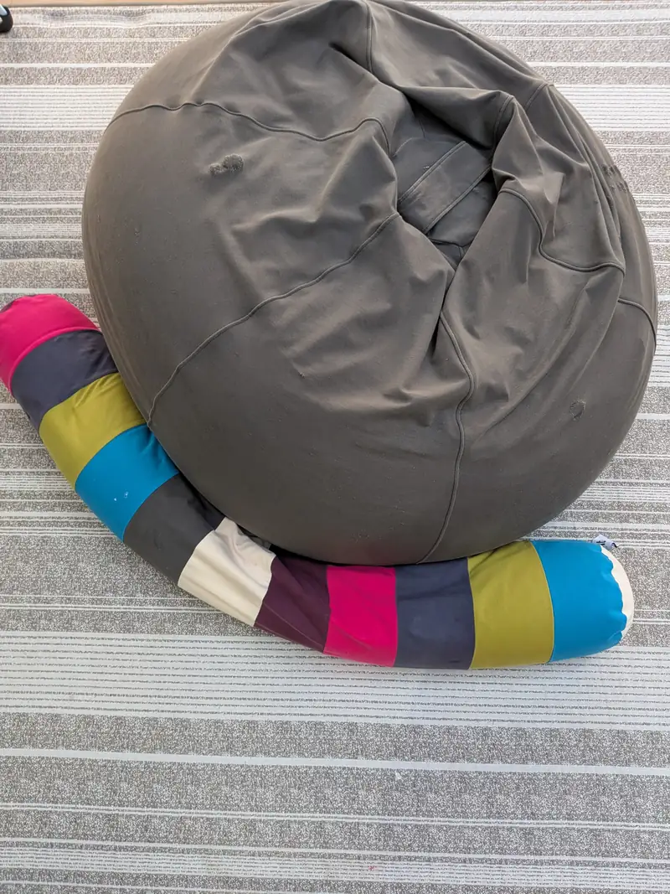
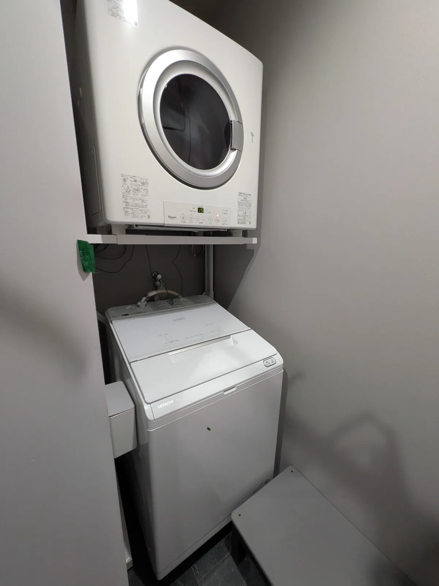
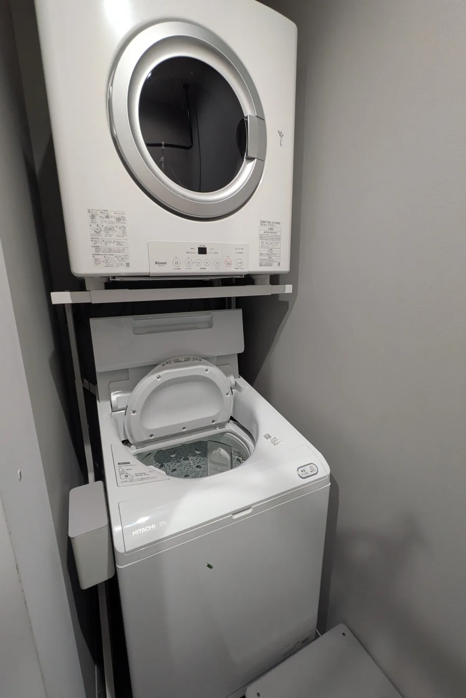
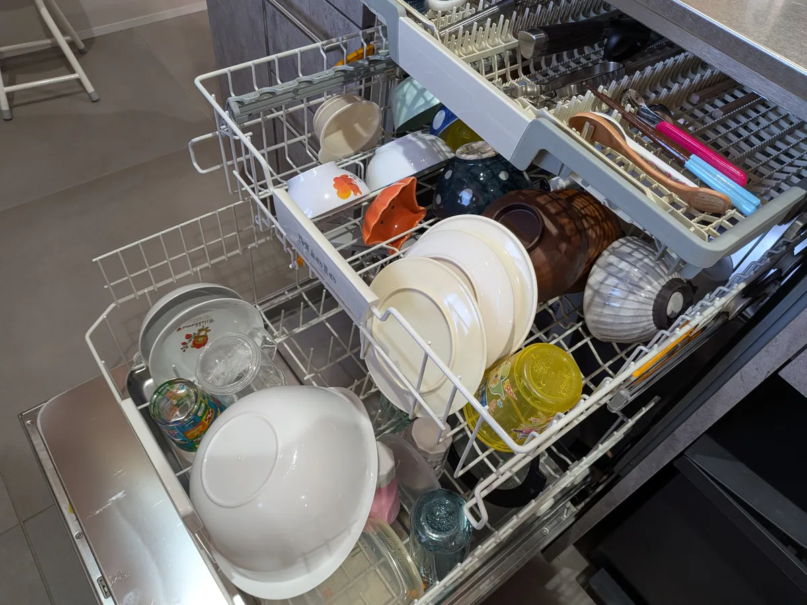

4人暮らしのラク家事帖
40代夫婦と6歳の息子、2歳の娘の4人家族です。毎日の暮らしで実際に使っている家電や道具のリアルな使い心地を、いいところも気になるところも正直にお届けします。
新着記事

Yogiboを4人家族で4年使ったリアルなレビュー｜ヘタってきたけど今もよく使っています
もらい物のYogiboを4年。硬さの変化とカバーの洗い方。

ビートウォッシュと乾太くんを4年使ったリアルなレビュー｜洗濯から乾燥まで約2時間の組み合わせ
洗濯から乾燥まで約2時間。4年使ってわかったリアル。

乾太くん（RDT-80）を4人家族で4年使ったリアルなレビュー｜子どもの服もシーツもすぐ乾く
4人家族で4年使ってわかった、よかったところと気になるところ。

ミーレの食洗機（G 5214 C SCi）を4人家族で4年使ったリアルなレビュー｜洗剤は専用品じゃなくてキュキュットで十分でした
4人家族で4年使ってわかった、よかったところと気になるところ。